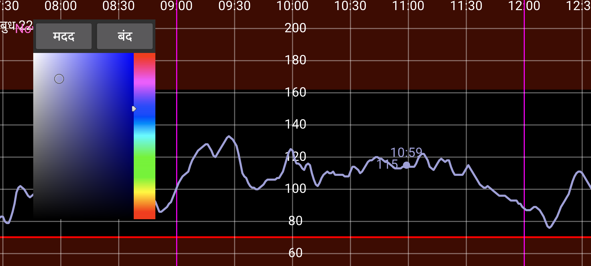

ar be de es fr hi it nl pl pt ru sv tr uk uz zh en
यहाँ आप संख्याओं, वक्रों और स्कैन बिंदुओं के रंग बदल सकते हैं। वक्र के एक बिंदु, स्कैन या मात्रा को छुएं (ताकि उस बिंदु या मात्रा के बारे में जानकारी दिखाई जाए)। इसके बाद कलर व्यू में एक रंग छुएं। वक्र, स्कैन बिंदु या मात्रा अब उस रंग में दिखाई जाएगी।
WearOS संस्करण में आपको एक बैक की वाली घड़ी की आवश्यकता है, बैक स्वाइप करना काम नहीं करेगा।